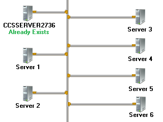
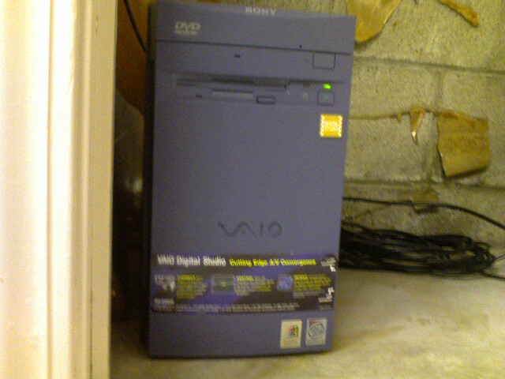

IWEB | Home |
Programming | Legos |
Electronics | Other Stuff |
About
IWEB | Home |
Programming | Legos |
Electronics | Other Stuff |
About
If you had an old computer laying around would you be willing enough to donate it? Requirements are below:
Requirements:
1. It must be a PC (Sorry, no Macs).
2. The computer must be able to function. I will wipe the hard drive incase of viruses and that sort of stuff.
3. The computer doesn't need a monitor. It is recommended that is has some sort of networking card.
4. Please include a power cable (I only have one spare right now!).
Tell Me About It:
1. Make a list of all (or most) the details of the computer.
2. You can take a picture of it if you want to.
3. Make sure you have a power cable.
4. Email me the details, and/or the picture of it.
5. After reading your details and viewing your picture, I will email you back. Futher instructions will be in that email.
What This Is Going To
This little 'project' of mine is going to ComCode Software and the donated computers will be used as StickFig World Servers.
Every person who donated will be given 'admin powers' in StickFig World, something normal people cannot get.
You will also recive a gift card code for CCS so all products will be free.
Please read on...
The Project Layout

This is the image of the project. There is currently one server.
There will be a total of 7 computers that will be turned into 'servers'. Only one exists right now. That server will run the StickFigure World Website and configuration pages.
Server 1 will be used as a backup server. All servers will backup their data from today onto that server and then will restart at midnight (to refresh and clean out the memory).
Server 2 will hold the player's game information and status. All the player's data from that day will be saved onto that server when he exits Stick Figure World.
Server 3 - Server 6 will be 'channels' for the players. These servers will split up the traffic for the game and will have a temporary copy the the player's data from that day.
More details will come soon.
What Is Already Here:
Only one server exists at this time: CCSSERVER2736. Details are below.
CCSSERVER2736
